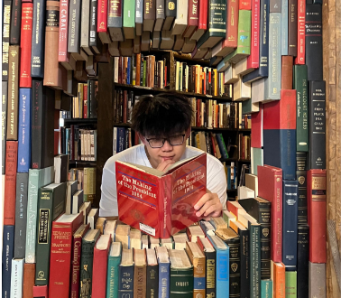
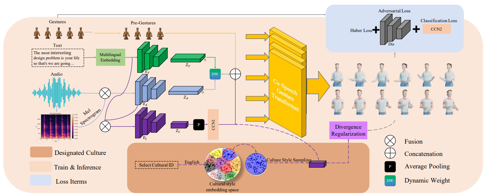

|
 |
Derek/Shuyu Gan
甘书宇 Senior Undergraduate Student Zhejiang University Email: derek.sygan [at] gmail [dot] com CV • GitHub |
About
|
I am a senior undergraduate student majoring in Computer Science in Turing Class, Zhejiang University,
jointly cultivated by CKC Honors College and College of Computer Science and Technology. During my undergraduate,
I have the fortunate to be advised by Prof. Lingyun Sun and Prof. Shi Chen and Dr. Jingyu Wu
on human-computer interaction and computer vision, Prof. Chunhua Shen on generative visual models. Currently I am a visiting student intern at University of California, San Diego,
supervised by Prof. Zhuowen Tu.
|
News
- [Jul, 2023] One paper accepted by ACMMM 2023!
- [Jul, 2023] Started my visiting student internship @Machine Learning, Perception, and Cognition Lab (mlPC) in UCSD.
- [Feb, 2023] Started my student internship @IDEA Lab, Zhejiang University.
- [Sept, 2022] Awarded Zhejiang Provincial Government Scholarship and CKC Honors College Outstanding Scholarship in Basic Sciences - First Class
Publication
 |
Cultural Self-Adaptive Multimodal Gesture Generation Based on
Multiple Culture Gesture Dataset |
Experience
Visiting Student Intern | |
Undergraduate Researcher | |
Student Intern |
Selected Awards
- Zhejiang University's top-notch scholarship for basic disciplines, 2021 and 2022
- Zhejiang Provincial Government Scholarship, 2022.
- Second prize scholarship of Zhejiang University, 2021 and 2022.
- Second prize of National Undergraduate Mathematics Competition, 2021
Miscellaneous
|
|
|

Template adapted from Ziyi Wu's Last updated: Aug.28, 2023